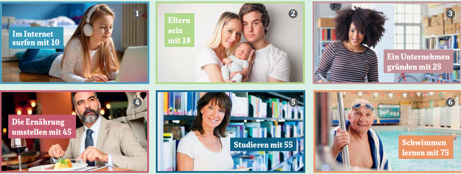
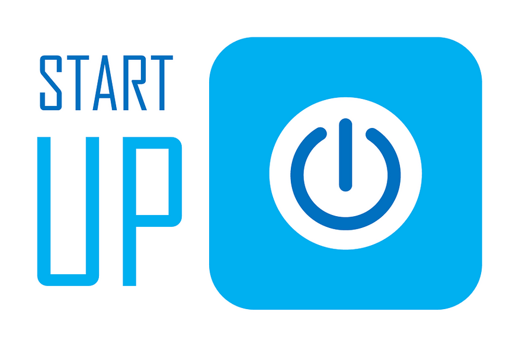

EOI_ALB2.2 - Tema 1.2: Veränderungen im Leben
Veränderungen im Leben
Enseñanzas Oficiales de Idiomas
|
|
Alemán Segundo de Nivel Intermedio B2
|
|
Lektion 1.2.
|
|
Veränderungen im Leben
|
|

Willkommen zu unserem zweiten Thema in unserer ersten Einheit!
Hier werden wir über Veränderungen im Leben sprechen. Dazu werden wir Redemittel kennenlernen, mit denen wir Begeisterung, Bedenken, Verständnis, Unverständnis, Zustimmung und Widerspruch auzudrücken können.
Ausserdem werden wir über Auswandern, Missverständnisse und Integration einiges erfahren.
Im grammtischen Bereich werden wir uns Ergänzungen und Angaben im Mittelfeld anschauen und die Verneinung üben.
Los geht's!
